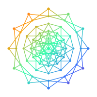

Lantern OS
Local-first personal OS. Private journal, interactive stories, and community dashboard — no account, no cloud required.
Orion Edition · v— ·
Core Experiences
Trade
Lantern Trader
Trading hub for stock trading, prediction markets, and market news — all in one place.
Open Trader → CreateContent Creator
Upload and share your dreams, moments, and creative work. Videos, notes, projects, and highlights — all stored locally.
Start Creating →More